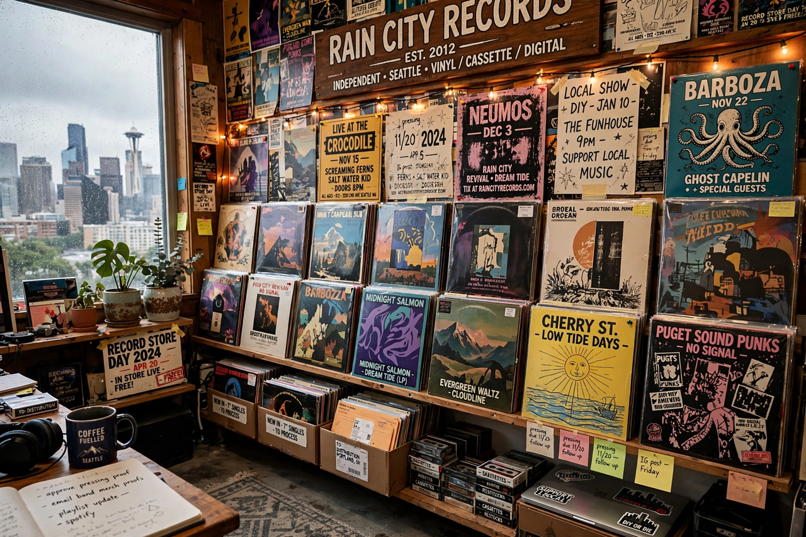

| Founded | 1986 (fanzine 1979; cassette label 1980s) |
|---|---|
| Founders | Bruce Pavitt, Jonathan Poneman |
| Genre | Alternative rock, grunge, indie rock, comedy |
| Country of origin | United States |
| Location | Seattle, Washington |
| Parent | Warner Music Group (49%, since 1995) |
Sub Pop is an American record label founded in 1986 by Bruce Pavitt and Jonathan Poneman in Seattle, Washington. The label was central to the emergence of grunge in the late 1980s and early 1990s, releasing early records by Nirvana, Soundgarden, and Mudhoney, and cultivating a distinctive regional sound and self-deprecating corporate identity ("We're not the best, but we're not the worst"-style sloganeering was typical of its hype).
Pavitt began Subterranean Pop as a fanzine in Olympia, Washington, in 1979, soon shortened to Sub Pop, championing regional independent scenes across America. After cassette compilations, Pavitt joined forces with Poneman in Seattle; their first vinyl releases included the Sub Pop 100 compilation (1986), Green River's Dry as a Bone, and Soundgarden's Screaming Life EP (1987). The label signed Nirvana and released Bleach (1989), recorded for about $600; frontman Kurt Cobain became grunge's defining figure after the band moved to a major label.
Sub Pop's shrewd media strategy — flying British journalists to Seattle, the Singles Club subscription series, slogans like "World Domination" — helped turn a local scene into an international phenomenon. After grunge's commercial peak the label nearly collapsed, but survived through a joint venture with Warner Bros. Records in 1995.
In the 2000s Sub Pop reinvented itself as a home for indie rock, releasing breakthrough albums by the Shins, Iron & Wine, Fleet Foxes, The Postal Service (whose Give Up became a slow-burning platinum hit), and Beach House, alongside comedy albums by artists such as David Cross and Flight of the Conchords.